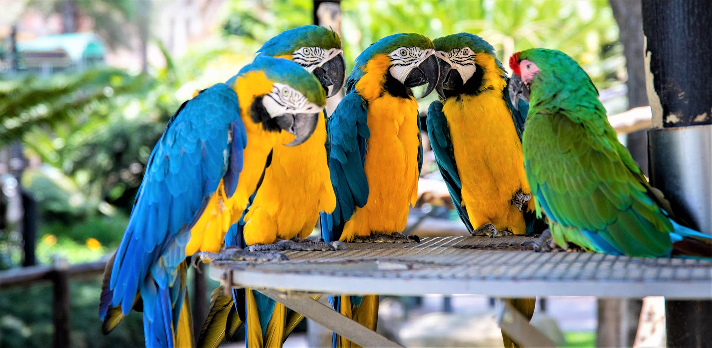

Join our group

What does it take to work with us? First, you need to be curious. Asking questions is what we do for a living, and you need to be determinate to find answers, even when nothing seems to work. Second, our research is at the interface of different disciplines, so you need to be willing to challenge yourself regularly to learn new methods, and be imaginative and creative in how you approach problems. Third, you will be working in big, collaborative projects, so you need to be a team player, willing to work with and help others. If this sounds like you, then keep reading.
I believe it is really important that the group works as a team, and that we celebrate each other successes. For this reason, every student and postdoc has a specific project they lead, and all projects are different enough such that one project succeeding will not take away from another project. At the same time, everyone is welcome to contribute to any ongoing project in the group; the simple rule is that you can help on any project, but you can not take over someone else’s project. The long author lists of many of our papers tell you that this approach generally works well!
The reason why I am in academia is because I love asking questions about animals. For this reason, I enjoy meeting with my students and postdocs regularly, so that we can discuss how their projects progress, and work together to solve any new challenge that arises. I have scheduled individual weekly meetings with every member of my group to make sure that everyone is supported and gets feedback, irrespective of whether I am teaching or writing a grant that week. We also have a weekly group meeting when we can practice talks before conferences, or discuss new results and methods, or sometimes reflect on the challenges of academic life (such as imposter syndrome or diversity issues). Finally, every Tuesday, we have a hackathon, where we code together to solve common problems. In this way, we build the tools that we need to make our life easier, and learn from each other along the way. You can see the results of those efforts on our Resources page.
If everything you have read so far sounds good, then our group might be the right place for you. But feel free to contact any group member to get their views on what it is like to actually work in our group (and please do not cc Andrea if you do so, they need to be able to give you an honest answer without me checking what they say!).
Postgraduate (PhD and Master) Students
Inquiries from prospective PhD & Master students are always welcome! However, you need to get in touch by late November if you want to be considered for university studentships, as the deadline for applications is in early January. There is an even earlier deadline if you come from the US to be considered for Gates scholarships. For details about the application process, see the Department of Zoology Introduction to Postgraduate Courses page.
If you are interested in working with me, send me a CV and a cover letter telling me what kind of questions excite. Have you seen one of our advertised projects (e.g. from the NERC Doctorate Landscape Awards program)? Tells me why you want to do it. Have you read one of our recent papers? Tell me what follow up work you would be excited to do. Your job is to convince me that you are a biologist fascinated by what animals (or humans) do, and interested in understanding their ecology and evolution.
Note that our work is mostly computational, so you need to be comfortable with programming. We mostly use R, but also some python and C++. You do not need to be a wizard in all of these languages, but some experience in at least one of them is a necessity. In other words, you should not be scared of a command line, and willing to learn how to master it.
Postdocs
Inquiries from potential postdocs are always welcome! We will, from time to time, advertise specific positions, but those are dependent on the grants that we have at any particular moment in time. Cambridge Colleges offer a number of Junior Research Fellowships which are designed as a first postdoc (i.e. straight out of a PhD). Each college advertises its own fellowships, with the earliest calls starting in late August and ending in December. If you are interested in applying for one of those, get in touch well in advance, so that we can discuss possible topics and work on your application. Similarly, if you are interested in Marie Curie Fellowships, Newton International Fellowships or other sources of funding, make sure you contact me well in advance; rushed applications invariably fail!
Senior Research Fellowships
If you are an experienced postdoc interested in Senior Research Fellowships (e.g. NERC fellowships, Royal Society University Research Fellowship) and have research interests that are complementary to my group, I am happy to discuss what Zoology and Cambridge can offer as a host and provide advice and mentorship. The department runs a Senior Research Fellowships Sponsorship Scheme, with applications in the autumn, so you want to get in touch during the summer to have enough time to put together a strong application.